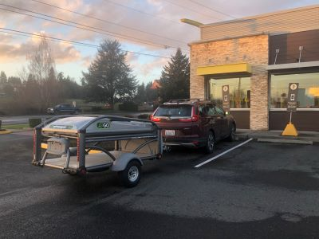
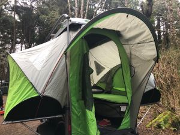
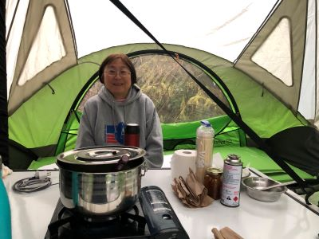
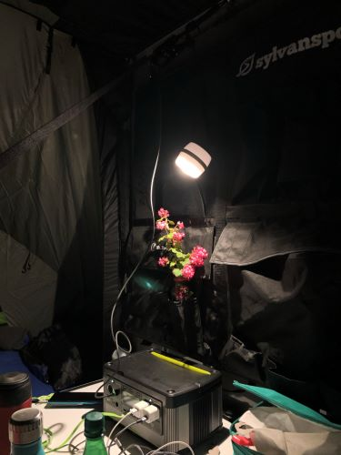

Kalaloch, WA
Today is our first camping this year.
We got SylvanSports Go. I knew it for couple of years but hesitated to get one. Because this past year, we decided to get one.
The main reason for me to camping is fresh air. Hence I don’t quite enjoy RV. And RV is expensive too. The key concern for tent is rain. With this one, we can enjoy raining while camping.
Last night was our first night. It was a great experience. Specially it started to rain early morning and I really enjoyed listening the rain drops without worrying getting wet!
We went to Olympic National park at Kalaloch beach. We enjoyed playing with our new toys so much that we didn’t even go to see the ocean.
 
 
×